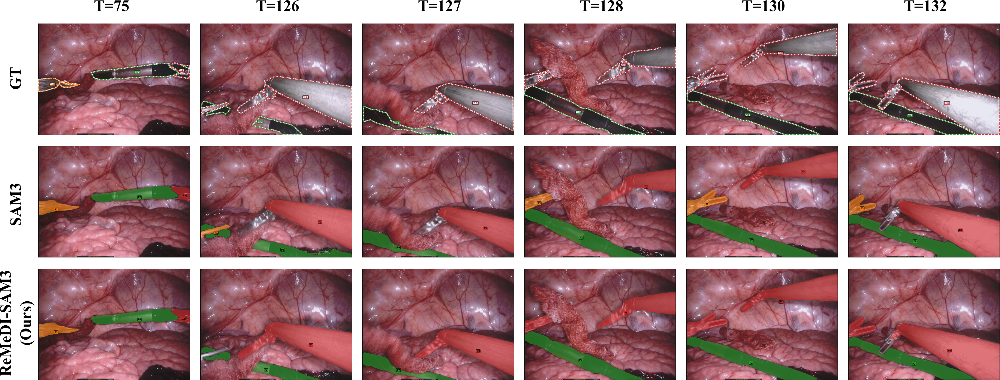

Accurate surgical instrument segmentation in endoscopic videos is crucial for computer-assisted interventions, yet remains challenging due to frequent occlusions, rapid motion, specular artefacts, and long-term instrument re-entry. While SAM3 provides a powerful spatio-temporal framework for video object segmentation, its performance in surgical scenes is limited by indiscriminate memory updates, fixed memory capacity, and weak identity recovery after occlusions.
We propose ReMeDI-SAM3, a training-free memory-enhanced extension of SAM3, that addresses these limitations through three components: (i) relevance-aware memory filtering with a dedicated occlusion-aware memory for storing pre-occlusion frames, (ii) a piecewise interpolation scheme that expands the effective memory capacity, and (iii) a feature-based re-identification module with temporal voting for reliable post-occlusion identity disambiguation. Together, these components mitigate error accumulation and enable reliable recovery after occlusions. Evaluations on EndoVis17 and EndoVis18 under a zero-shot setting show absolute mcIoU improvements of around 7% and 16%, respectively, over vanilla SAM3, outperforming even prior training-based approaches.

We propose ReMeDI-SAM3: Refined Memory for Disambiguation of Identities with SAM3, a training-free extension of SAM3 to enhance temporal consistency and identity preservation in surgical videos. The pipeline is shown above. Our approach (1) restructures SAM3 memory into two components: (i) a
Our method achieves state-of-the-art results on both EndoVis17 and EndoVis18 benchmarks under zero-shot settings, outperforming both vanilla SAM3 and prior training-based approaches.
| Method | Challenge IoU | IoU | mcIoU |
|---|---|---|---|
| ISINet | 55.62 | 52.20 | 28.96 |
| S3Net | 72.54 | 71.99 | 46.55 |
| MATIS Frame | 68.79 | 62.74 | 37.30 |
| TP-SIS | 63.37 | 63.37 | 52.74 |
| TrackAnything | 67.41 | 64.50 | 62.97 |
| SurgicalSAM | 69.94 | 69.94 | 67.03 |
| SP-SAM | 73.94 | 73.94 | 71.06 |
| MA-SAM2 (Zero-Shot) | 62.49 | 62.49 | 59.89 |
| SAM3 (Zero-Shot) | 71.32 | 71.32 | 68.79 |
| ReMeDI-SAM3 (Ours) | 78.57 | 78.57 | 75.65 |
| Method | Challenge IoU | IoU | mcIoU |
|---|---|---|---|
| ISINet | 73.03 | 70.94 | 40.21 |
| S3Net | 75.81 | 74.02 | 42.58 |
| MATIS Frame | 82.37 | 77.01 | 48.65 |
| TP-SIS | 84.92 | 83.61 | 65.44 |
| TrackAnything | 65.72 | 60.88 | 38.60 |
| SurgicalSAM | 80.33 | 80.33 | 58.87 |
| SP-SAM | 84.24 | 84.24 | 65.71 |
| SAM3 (Zero-Shot) | 88.04 | 81.82 | 66.46 |
| ReMeDI-SAM3 (Ours) | 88.24 | 87.46 | 82.23 |

Qualitative comparison of SAM3 and ReMeDI-SAM3 on a challenging occlusion and reappearance case in EndoVis17. After the orange-labeled instrument becomes fully occluded at T=44, SAM3 exhibits identity drift and incorrectly assigns the orange identity to the visible green instrument, with this mislabeling persisting across subsequent frames. In contrast, ReMeDI-SAM3 suppresses such false-positive identity propagation during the occlusion and correctly re-identifies the true instrument upon reappearance.

Qualitative comparison on EndoVis17 showing instrument turnover. The orange instrument (Bipolar Forceps) exits the scene after T=75, and a second red instrument (Prograsp Forceps) enters later (T=126-132). ReMeDI-SAM3 initially misses the new instrument (T=126) as it's not clearly visible but subsequently correctly recovers and assigns the red identity once sufficient evidence is available. In contrast, SAM3 incorrectly preserves orange identity after occlusion, continuing to label the new red instrument as orange.
The work described in this paper was conducted in the framework of Graduate School 2543/1 "Intraoperative Multi-Sensory Tissue Differentiation in Oncology" (project ID 40947457) funded by German Research Foundation (DFG - Deutsche Forschungsgemeinschaft). This work has been supported by the Deutsche Forschungsgemeinschaft (DFG) – EXC number 2064/1 – Project number 390727645. The authors thank International Max Planck Research School for Intelligent Systems (IMPRS-IS) for supporting Valay Bundele and Mehran Hosseinzadeh. We also thank Jan-Niklas Dihlmann for redesigning the pipeline figure.